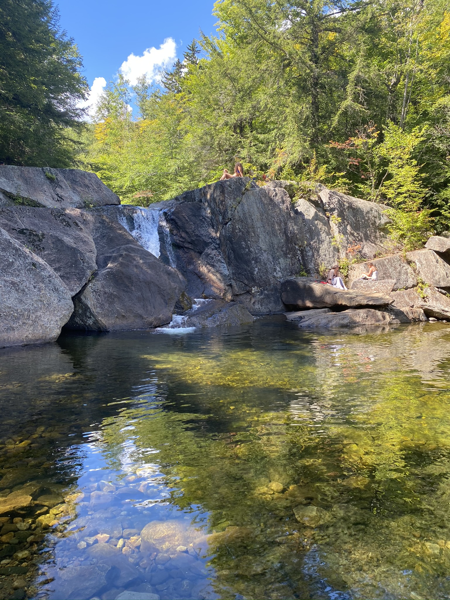
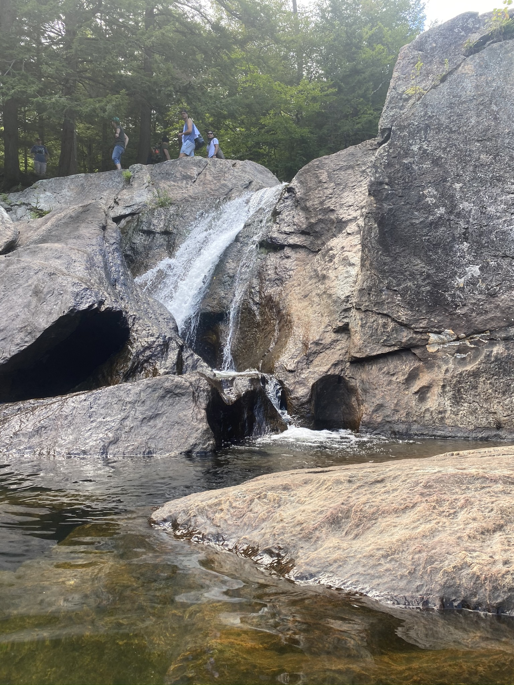
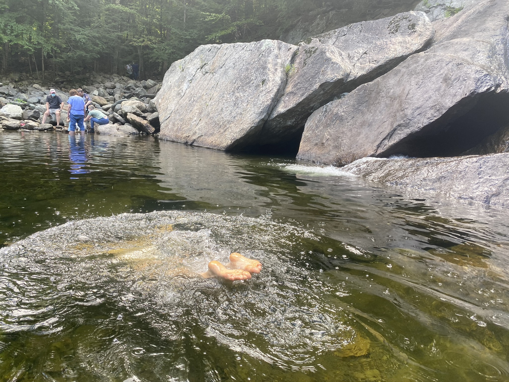

Distance
Distance Observed Wildlife
Observed WildlifeThree level falls with multiple pools for swimming right off the highway. It tends to get crowded.

These falls have three sets of cool cascades. It also has two, possibly three, swimming holes to enjoy on a hot day. My partner and I made a quick stop at Buttermilk Falls as a part of a trip to a relative and had fun enjoying taking a dip and enjoying the falls. It requires almost no hike as we reached the middle falls after only a very short walk. There are so many places to set up and have a picnic and have a swim in the cool mountain water. The pool of the upper falls is much bigger but there were so many others so we went on our merry way.

This is a great stop for anyone looking for an easily accessible swimming hole, but not if you are looking for anything resembling solitude.
